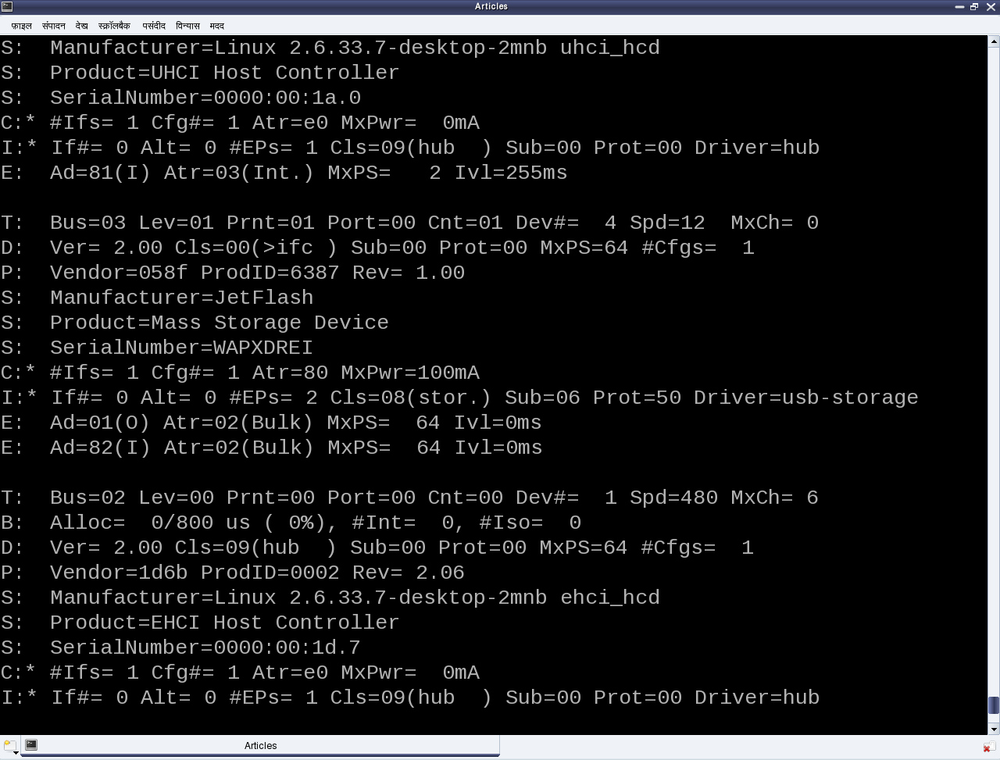

USB Drivers in Linux: Data Transfer to & from USB Devices
This thirteenth article, which is part of the series on Linux device drivers, details out the ultimate step of data transfer to and from a USB device using your first USB driver in Linux – a continuation from the previous two articles.
USB miscellany
Pugs continued, “To answer your question about how a driver selectively registers or skips a particular interface of a USB device, you need to understand the significance of the return value of probe() callback.” Note that the USB core would invoke probe for all the interfaces of a detected device, except the ones which are already registered. So, for the first time, it would call for all. Now, if the probe returns 0, it means the driver has registered for that interface. Returning an error code indicates not registering for it. That’s all. “That was simple”, commented Shweta.
“Now, let’s talk about the ultimate – data transfers to & from a USB device”, continued Pugs. “But before that tell me what is this MODULE_DEVICE_TABLE? This is bothering me since you explained the USB device id table macros”, asked Shweta pausing Pugs. “That’s another trivial stuff. It is mainly for the user-space depmod“, said Pugs. “Module” is another name for a driver, which is dynamically loadable and unloadable. The macro MODULE_DEVICE_TABLE generates two variables in a module’s read only section, which is extracted by depmod and stored in global map files under /lib/modules/<kernel_version>. modules.usbmap and modules.pcimap are two such files for USB & PCI device drivers, respectively. This enables auto-loading of these drivers, as we saw usb-storage driver getting auto-loaded.
USB data transfer
“Time for USB data transfers. Let’s build upon the USB device driver coded in our previous sessions, using the same handy JetFlash pen drive from Transcend with vendor id 0x058f and product id 0x6387.”
USB being a hardware protocol, it forms the usual horizontal layer in the kernel space. And hence for it to provide an interface to user space, it has to connect through one of the vertical layers. As character (driver) vertical is already discussed, it is the current preferred choice for the connection with the USB horizontal, for understanding the complete data transfer flow. Also, we do not need to get a free unreserved character major number, but can use the character major number 180, reserved for USB based character device files. Moreover, to achieve this complete character driver logic with USB horizontal in one go, the following are the APIs declared in <linux/usb.h>:
int usb_register_dev(struct usb_interface *intf,
struct usb_class_driver *class_driver);
void usb_deregister_dev(struct usb_interface *intf,
struct usb_class_driver *class_driver);
Usually, we would expect these functions to be invoked in the constructor and the destructor of a module, respectively. However, to achieve the hot-plug-n-play behaviour for the (character) device files corresponding to USB devices, these are instead invoked in the probe and the disconnect callbacks, respectively. First parameter in the above functions is the interface pointer received as the first parameter in both probe and disconnect. Second parameter – struct usb_class_driver needs to be populated with the suggested device file name and the set of device file operations, before invoking usb_register_dev(). For the actual usage, refer to the functions pen_probe() and pen_disconnect() in the code listing of pen_driver.c below.
Moreover, as the file operations (write, read, …) are now provided, that is where exactly we need to do the data transfers to and from the USB device. So, pen_write() and pen_read()below shows the possible calls to usb_bulk_msg() (prototyped in <linux/usb.h>) to do the transfers over the pen drive’s bulk end points 0x01 and 0x82, respectively. Refer to the ‘E’ lines of the middle section in Figure 19 for the endpoint number listings of our pen drive. Refer to the header file <linux/usb.h> under kernel sources, for the complete list of USB core API prototypes for the other endpoint specific data transfer functions like usb_control_msg(), usb_interrupt_msg(), etc. usb_rcvbulkpipe(), usb_sndbulkpipe(), and many such other macros, also defined in <linux/usb.h>, compute the actual endpoint bitmask to be passed to the various USB core APIs.

Note that a pen drive belongs to a USB mass storage class, which expects a set of SCSI like commands to be transacted over the bulk endpoints. So, a raw read/write as shown in the code listing below may not really do a data transfer as expected, unless the data is appropriately formatted. But still, this summarizes the overall code flow of a USB driver. To get a feel of real working USB data transfer in a simple and elegant way, one would need some kind of custom USB device, something like the one available at eSrijan.
#include <linux/module.h>
#include <linux/kernel.h>
#include <linux/usb.h>
#define MIN(a,b) (((a) <= (b)) ? (a) : (b))
#define BULK_EP_OUT 0x01
#define BULK_EP_IN 0x82
#define MAX_PKT_SIZE 512
static struct usb_device *device;
static struct usb_class_driver class;
static unsigned char bulk_buf[MAX_PKT_SIZE];
static int pen_open(struct inode *i, struct file *f)
{
return 0;
}
static int pen_close(struct inode *i, struct file *f)
{
return 0;
}
static ssize_t pen_read(struct file *f, char __user *buf, size_t cnt, loff_t *off)
{
int retval;
int read_cnt;
/* Read the data from the bulk endpoint */
retval = usb_bulk_msg(device, usb_rcvbulkpipe(device, BULK_EP_IN),
bulk_buf, MAX_PKT_SIZE, &read_cnt, 5000);
if (retval)
{
printk(KERN_ERR "Bulk message returned %d\n", retval);
return retval;
}
if (copy_to_user(buf, bulk_buf, MIN(cnt, read_cnt)))
{
return -EFAULT;
}
return MIN(cnt, read_cnt);
}
static ssize_t pen_write(struct file *f, const char __user *buf, size_t cnt,
loff_t *off)
{
int retval;
int wrote_cnt = MIN(cnt, MAX_PKT_SIZE);
if (copy_from_user(bulk_buf, buf, MIN(cnt, MAX_PKT_SIZE)))
{
return -EFAULT;
}
/* Write the data into the bulk endpoint */
retval = usb_bulk_msg(device, usb_sndbulkpipe(device, BULK_EP_OUT),
bulk_buf, MIN(cnt, MAX_PKT_SIZE), &wrote_cnt, 5000);
if (retval)
{
printk(KERN_ERR "Bulk message returned %d\n", retval);
return retval;
}
return wrote_cnt;
}
static struct file_operations fops =
{
.owner = THIS_MODULE,
.open = pen_open,
.release = pen_close,
.read = pen_read,
.write = pen_write,
};
static int pen_probe(struct usb_interface *interface, const struct usb_device_id *id)
{
int retval;
device = interface_to_usbdev(interface);
class.name = "usb/pen%d";
class.fops = &fops;
if ((retval = usb_register_dev(interface, &class)) < 0)
{
/* Something prevented us from registering this driver */
printk(KERN_ERR "Not able to get a minor for this device.");
}
else
{
printk(KERN_INFO "Minor obtained: %d\n", interface->minor);
}
return retval;
}
static void pen_disconnect(struct usb_interface *interface)
{
usb_deregister_dev(interface, &class);
}
/* Table of devices that work with this driver */
static struct usb_device_id pen_table[] =
{
{ USB_DEVICE(0x058F, 0x6387) },
{} /* Terminating entry */
};
MODULE_DEVICE_TABLE (usb, pen_table);
static struct usb_driver pen_driver =
{
.name = "pen_driver",
.probe = pen_probe,
.disconnect = pen_disconnect,
.id_table = pen_table,
};
static int __init pen_init(void)
{
int result;
/* Register this driver with the USB subsystem */
if ((result = usb_register(&pen_driver)))
{
printk(KERN_ERR "usb_register failed. Error number %d", result);
}
return result;
}
static void __exit pen_exit(void)
{
/* Deregister this driver with the USB subsystem */
usb_deregister(&pen_driver);
}
module_init(pen_init);
module_exit(pen_exit);
MODULE_LICENSE("GPL");
MODULE_AUTHOR("Anil Kumar Pugalia <email@sarika-pugs.com>");
MODULE_DESCRIPTION("USB Pen Device Driver");
As a reminder, the usual steps for any Linux device driver may be repeated with the above code, along with the pen drive steps:
Build the driver (pen_driver.ko file) by running make.
Load the driver using insmod pen_driver.ko.
Plug-in the pen drive (after making sure that usb-storage driver is not already loaded).
Check for the dynamic creation of /dev/pen0. (0 being the minor number obtained – check dmesg logs for the value on your system)
Possibly try some write/read on /dev/pen0. (Though you may mostly get connection timeout and/or broken pipe errors because of non-conformant SCSI commands)
Unplug-out the pen drive and look out for gone /dev/pen0.
Unload the driver using rmmod pen_driver.
Summing up
Meanwhile, Pugs hooked up his first of its kind creation – the Linux device driver kit (LDDK) into his system to show a live demonstration of the USB data transfers. “A ha! Finally a cool complete working USB driver”, quipped excited Shweta. “Want to have more fun. We could do a block driver over it”, added Pugs. “O! Really”, Shweta asked with a glee on her face. “Yes. But before that we would need to understand the partitioning mechanisms”, commented Pugs.